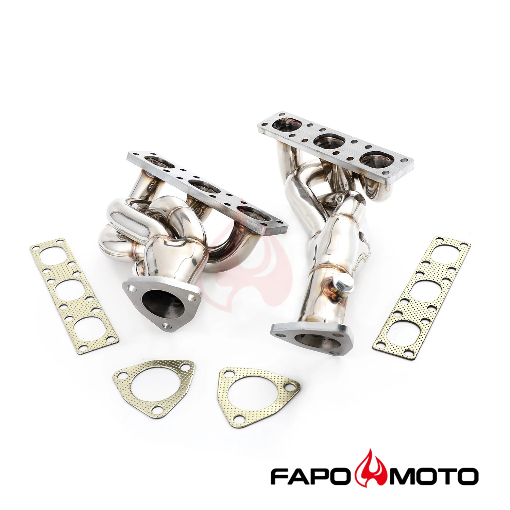

1 / 5Equal Length kolektors wydech Manifold Do BMW E36 325i 323i 328i M3 Z3 M50 M52 FE690110
Aplikacja BMW 323i 1997-1998 2,5 l BMW 325i 1992-1995 2,5L BMW 325is 1992-1995 2.5L BMW 328i 1996-1999 2.8L BMW 328is 1996-1999 2.8L BMW M3 1995-1999 3,0L / 3,2L BMW Z3 1998-2000 2,8L / 3,2L Montaż przykręcany do silników M50/S50 Pasuje również do silników M52/S52 po konwersji na OBDI poprzez usunięcie SAP Cechy Doskonała jakość i trwałość poprawiająca osiągi pojazdu Krótka konstrukcja zapewniająca wzrost mocy od ob…
Application BMW 323i 1997-1998 2.5L BMW 325i 1992-1995 2.5L BMW 325is 1992-1995 2.5L BMW 328i 1996-1999 2.8L BMW 328is 1996-1999 2.8L BMW M3 1995-1999 3.0L / 3.2L BMW Z3 1998-2000 2.8L / 3.2L Bolt-on install for M50/S50 engines Also fits M52/S52 engines if converted to OBDI by removing SAP Features Excellent quality and durability to improve vehicle performance Shorty design for power gain from idle to mid-range RPM Fully mandrel bent tubes made of high quality 16-gauge 304 stainless steel Head flanges laser-cut from high quality 7/16-inch thick steel plates The flange is flattened by a hydraulic press for precise and leak free sealing All joints are golden color TIG brass style welded to prevent cracking and wear Flanges chrome plated for corrosion resistance Polished surface for extra protection against rusting The accessories in the photos are included 1 year warranty for any manufacturing defect Technical Specifications Header Type: Shorty / Short Tube Primary Diameter: 1-1/2 in. (38mm) Collector Diameter: 2 in. (51mm) Head Flange Thickness: 7/16 in. (11.5mm) Pipe Thickness: 16 gauge (1.5mm) Material: 304 Stainless Steel Finish: Polished
1799,99 PLN
Opis produktu
Aplikacja
- BMW 323i 1997-1998 2,5 l
- BMW 325i 1992-1995 2,5L
- BMW 325is 1992-1995 2.5L
- BMW 328i 1996-1999 2.8L
- BMW 328is 1996-1999 2.8L
- BMW M3 1995-1999 3,0L / 3,2L
- BMW Z3 1998-2000 2,8L / 3,2L
- Montaż przykręcany do silników M50/S50
- Pasuje również do silników M52/S52 po konwersji na OBDI poprzez usunięcie SAP
Cechy
- Doskonała jakość i trwałość poprawiająca osiągi pojazdu
- Krótka konstrukcja zapewniająca wzrost mocy od obrotów biegu jałowego do średnich obrotów
- Rury w pełni gięte trzpieniowo, wykonane z wysokiej jakości stali nierdzewnej 304 o średnicy 16 mm
- Kołnierze głowicy wycinane laserowo z wysokiej jakości blach stalowych o grubości 7/16 cala
- Kołnierz jest spłaszczany za pomocą prasy hydraulicznej, co zapewnia precyzyjne i szczelne uszczelnienie
- Wszystkie połączenia są spawane metodą TIG w kolorze złotym, aby zapobiec pękaniu i zużyciu
- Kołnierze chromowane, co zapewnia odporność na korozję
- Polerowana powierzchnia dla dodatkowej ochrony przed rdzą
- Akcesoria widoczne na zdjęciach są wliczone w cenę
- 1 rok gwarancji na wszelkie wady produkcyjne
Dane techniczne
- Typ nagłówka:Krótka / Krótka rurka
- Podstawowa średnica:1-1/2 cala (38 mm)
- Średnica kolektora:2 cala (51 mm)
- Grubość kołnierza głowicy:7/16 cala (11,5 mm)
- Grubość rury:Średnica 16 (1,5 mm)
- Tworzywo:Stal nierdzewna 304
- Skończyć:Błyszczący
Application
- BMW 323i 1997-1998 2.5L
- BMW 325i 1992-1995 2.5L
- BMW 325is 1992-1995 2.5L
- BMW 328i 1996-1999 2.8L
- BMW 328is 1996-1999 2.8L
- BMW M3 1995-1999 3.0L / 3.2L
- BMW Z3 1998-2000 2.8L / 3.2L
- Bolt-on install for M50/S50 engines
- Also fits M52/S52 engines if converted to OBDI by removing SAP
Features
- Excellent quality and durability to improve vehicle performance
- Shorty design for power gain from idle to mid-range RPM
- Fully mandrel bent tubes made of high quality 16-gauge 304 stainless steel
- Head flanges laser-cut from high quality 7/16-inch thick steel plates
- The flange is flattened by a hydraulic press for precise and leak free sealing
- All joints are golden color TIG brass style welded to prevent cracking and wear
- Flanges chrome plated for corrosion resistance
- Polished surface for extra protection against rusting
- The accessories in the photos are included
- 1 year warranty for any manufacturing defect
Technical Specifications
- Header Type: Shorty / Short Tube
- Primary Diameter: 1-1/2 in. (38mm)
- Collector Diameter: 2 in. (51mm)
- Head Flange Thickness: 7/16 in. (11.5mm)
- Pipe Thickness: 16 gauge (1.5mm)
- Material: 304 Stainless Steel
- Finish: Polished
FAPO Polska
Ten produkt obsługujemy lokalnie
Autoryzowana obsługa
FAPO Polska prowadzi katalog, kontakt i zamówienia bez odsyłania klienta do zewnętrznych sklepów.
Dobór po aucie
Sprawdzamy dopasowanie produktu do pojazdu, rocznika i wersji przed finalizacją zamówienia.
Wsparcie po zakupie
Masz kontakt w Polsce w sprawach zamówień, wysyłki, gwarancji i zwrotów.